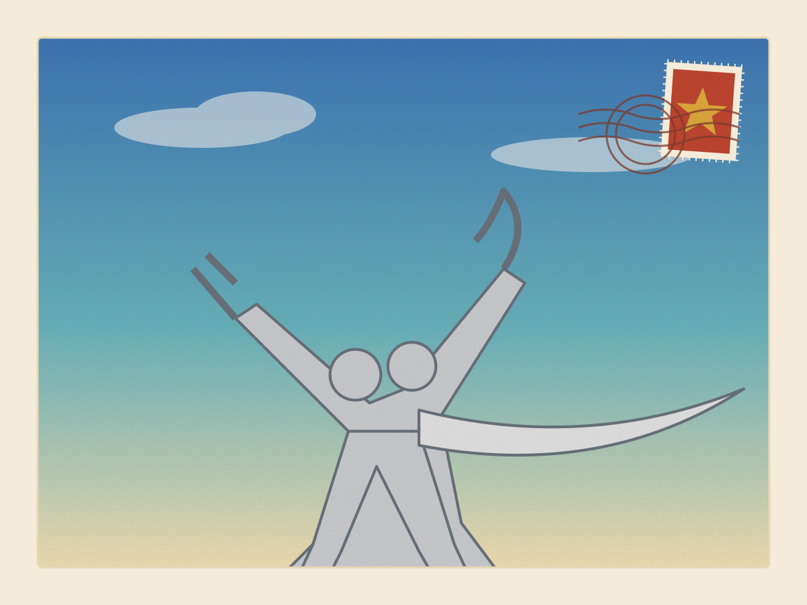
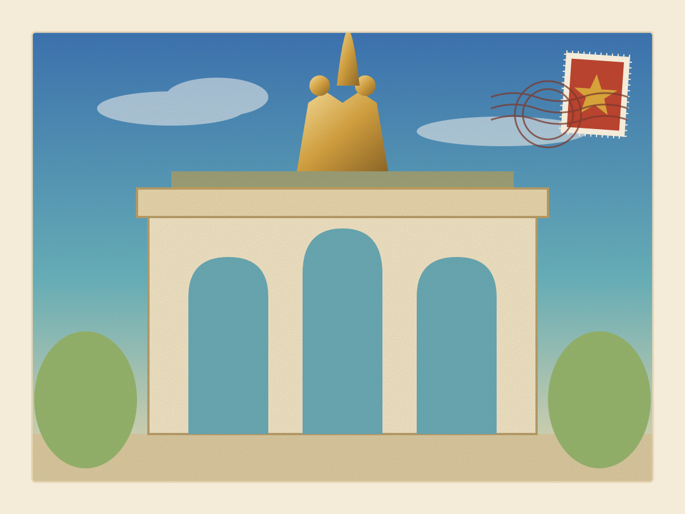
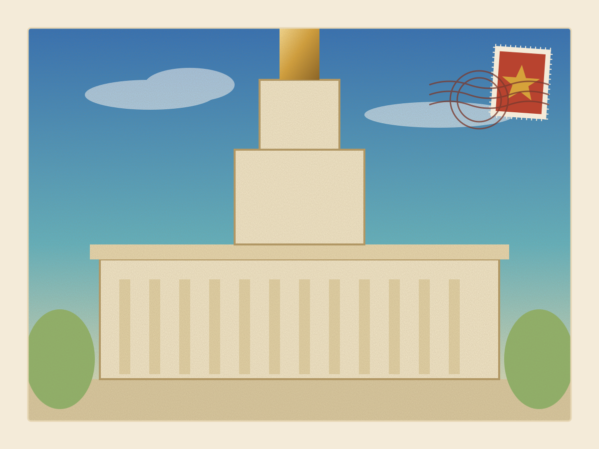
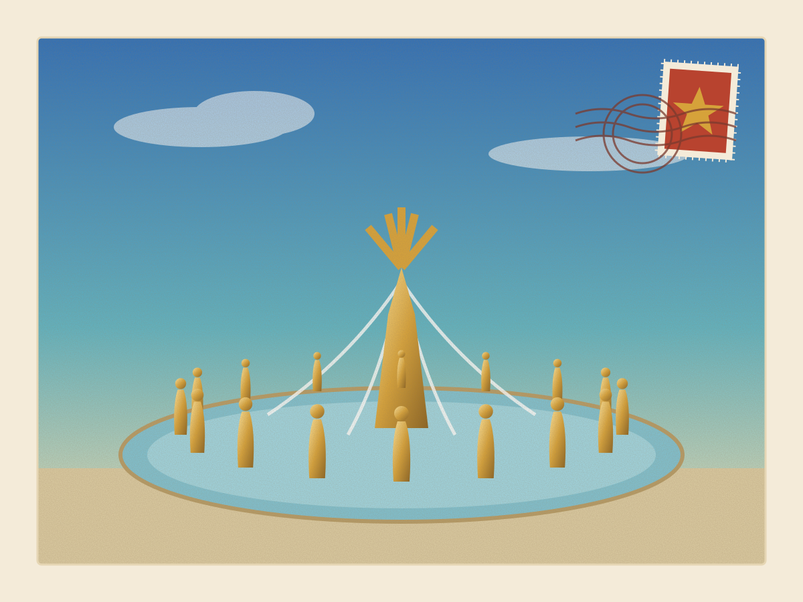
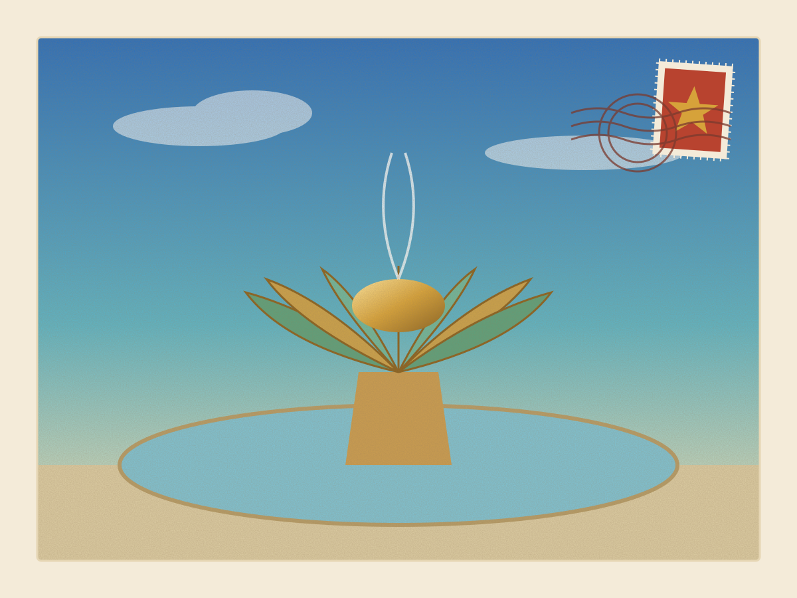
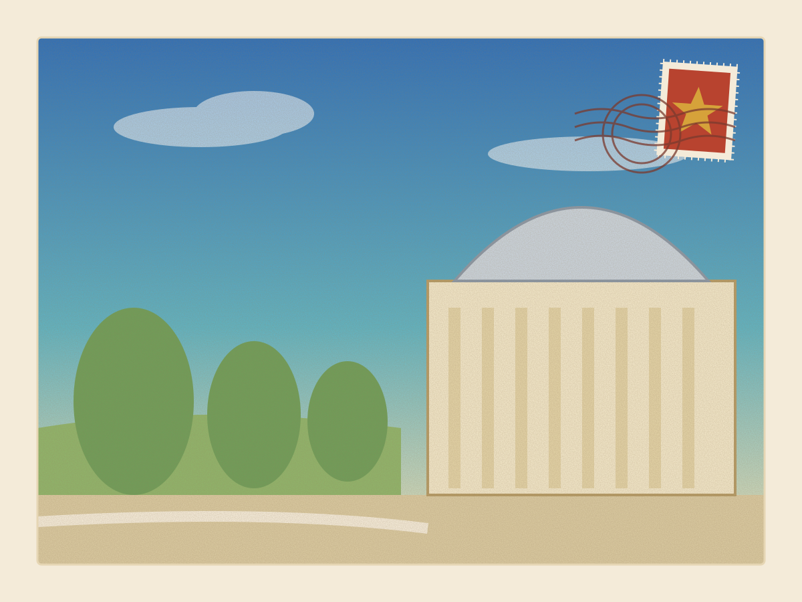

Париж
«Рабочего и колхозницу» Вера Мухина сделала для павильона СССР на Всемирной выставке в Париже. Советский павильон соперничал с немецким, стоявшим напротив.
Республик пятнадцать, а золотых сестёр у фонтана шестнадцать. Семьдесят лет одной из них говорят, что она лишняя, а она всё стоит на своём месте и почти ничего не видела.
Теперь она пишет вам: «Пришлите мне открытки». Пройдите по выставке, найдите каждый вид из её писем — и соберите для неё альбом.
Вокруг чаши фонтана «Дружба народов» стоят шестнадцать золотых сестёр. Одна из них осталась от республики, которой давно нет, и сойти с места не может.
Вы — фотограф-почтальон. На каждой точке находите место, откуда открывается вид из её письма, снимаете его для себя и отвечаете на её вопрос. Ответ становится подписью к открытке в альбоме.
А в конце альбом нужно вручить. Только сначала узнайте, какая из шестнадцати — она.
Дорогой товарищ фотограф!
Пишет вам одна из золотых сестёр с фонтана. Нас шестнадцать, и я — шестнадцатая. Я не обижаюсь. Я стою.
Пришлите мне, пожалуйста, открытки. А в конце приходите ко мне — я буду ждать на своём месте.
Ваша Шестнадцатая
«Это ракета? Серебряная башня, которая собирается улететь? В моё время такие только рисовали»
Шесть открыток из восьми, не по порядку. Остальные виды сестра опишет в письмах.

«Рабочий и колхозница» приехали на выставку раньше сестёр. На чём они стоят теперь?

Сестра ни разу его не видела. Какое имя на нём написано?

Высокий павильон в начале главной аллеи. Что у него на самой вершине?

Золотые фигуры вокруг одной чаши. Одна из них ждёт ваш альбом.

Ровесник сестры. Из чего он собран, видно только вблизи.

Здесь когда-то гремели машины. Что над его входом теперь?
Здесь не ищут виновного. Сестра пишет, откуда снимать: «встаньте посередине», «отойдите, пока не войдёт всё». Вы находите эту точку и отвечаете, что видно именно оттуда.
Застряли — переверните открытку: на обороте три приписки, последняя — ответ. Фотографии делаете для себя, квест их не проверяет.
Один код доступа на всю компанию. Квест в разработке, о старте объявим в Telegram.
Около 10 минут от метро «ВДНХ». Квест открывается в браузере телефона.
Каждая точка — открытка: вид из письма и ваша подпись к нему.
Возвращаетесь к фонтану и находите в кругу ту самую сестру.
Скульптура переехала, павильон сменил машины, выставка не раз меняла имя. Никого из них не убрали.
«Рабочего и колхозницу» Вера Мухина сделала для павильона СССР на Всемирной выставке в Париже. Советский павильон соперничал с немецким, стоявшим напротив.
1 августа выставка открылась как сельскохозяйственная. В одном из павильонов стояли комбайны и тракторы.
«Рабочий и колхозница» стали эмблемой «Мосфильма» — их видели в начале сотен фильмов.
Одну из союзных республик преобразовали в автономию. Золотая фигура на фонтане осталась на своём месте.
У метро «ВДНХ» открыли монумент «Покорителям космоса» высотой около 107 метров.
ВДНХ — выставка на севере Москвы, открытая в 1939 году: аллеи, фонтаны и павильоны союзных республик с национальными орнаментами. Её строили как набор видовых точек, и она разошлась по стране на открытках.
Квест начинается и заканчивается у метро «ВДНХ». Территория выставки свободная, павильоны и музеи нужны только снаружи.
Старт у «Рабочего и колхозницы», около 10 минут от метро «ВДНХ». Финиш у фонтана «Дружба народов», оттуда к метро около 20 минут.
По нашей оценке, 2–2,5 часа: 8 точек и около 4,5 км пешком.
Да. Основные загадки рассчитаны на взрослых и подростков, для младших есть задания по желанию.
990 ₽ за квест: один код доступа на всю компанию. Хватит одного телефона.
Квест в разработке. Дату запуска объявим в Telegram-канале «Дворами».
Нет. Территория выставки свободная, все загадки решаются снаружи.
Да. Задания не зависят от воды в фонтанах. Зимой вокруг фонтанов бывает каток — смотрим с края, на лёд выходить не нужно.
Да. Квест открывается в браузере телефона, дорогу к точкам показывает карта. Зарядите телефон перед стартом.
Перевернуть открытку: на обороте три приписки, и последняя — ответ.
Квест в разработке, взять дело можно будет здесь. Напишем в Telegram, как только первую открытку можно будет отправить.
Исторические факты на этой странице сверены по публикациям: